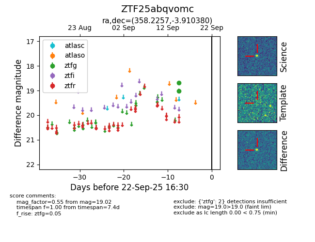

FINK: ZTF25abqvomc
Lasair: ZTF25abqvomc
ALeRCE: ZTF25abqvomc
ZTF25abqvomc (ztf,fink)
equatorial (ra, dec) = (358.2257,-3.91038)
galactic (l, b) = (89.3391,-62.89951)

last ztfg=19.02
2 ztfg detections